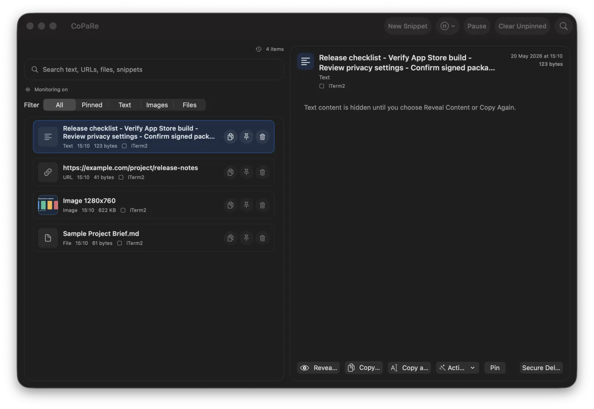
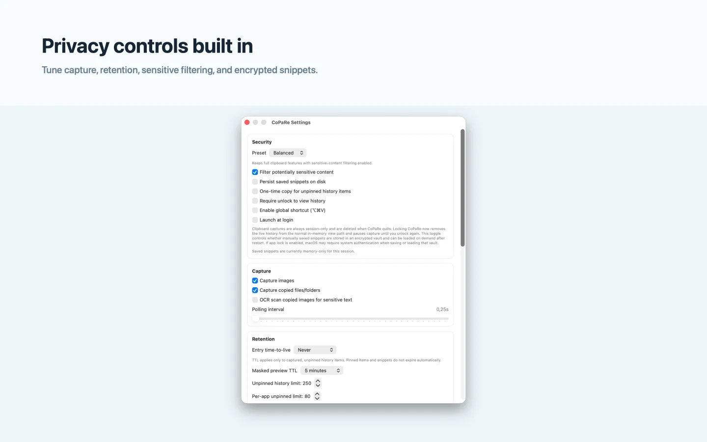
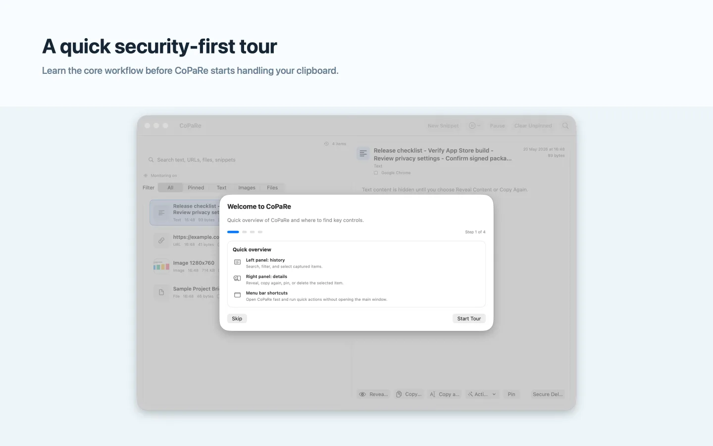

Find text, URLs, images, files, and snippets in one place.
Use search, filters, and the menu bar to copy again without hunting through apps or documents.
Private clipboard manager for macOS
Search recent copies, reuse snippets, and pause capture when work gets sensitive. Everything stays local on your Mac.
Why it exists
CoPaRe is intentionally small, local, and direct. It helps you recover what you just copied without adding accounts, telemetry, or remote storage.
Use search, filters, and the menu bar to copy again without hunting through apps or documents.
Captured clipboard items are session-only by default and can be securely deleted at any time.
CoPaRe gives you visible controls for the moments when the clipboard should stay quiet.

Everyday workflow
Privacy controls
Tune CoPaRe around your workflow: image and file capture, OCR filtering, time-to-live, app exclusions, local snippet persistence, and secure wipe are all visible in one place.

First run
The onboarding flow explains the core controls up front, then CoPaRe stays available from the menu bar for quick actions.

Local-first by design
Install CoPaRe from the Mac App Store, download the signed direct build from GitHub, or review the source before installing.